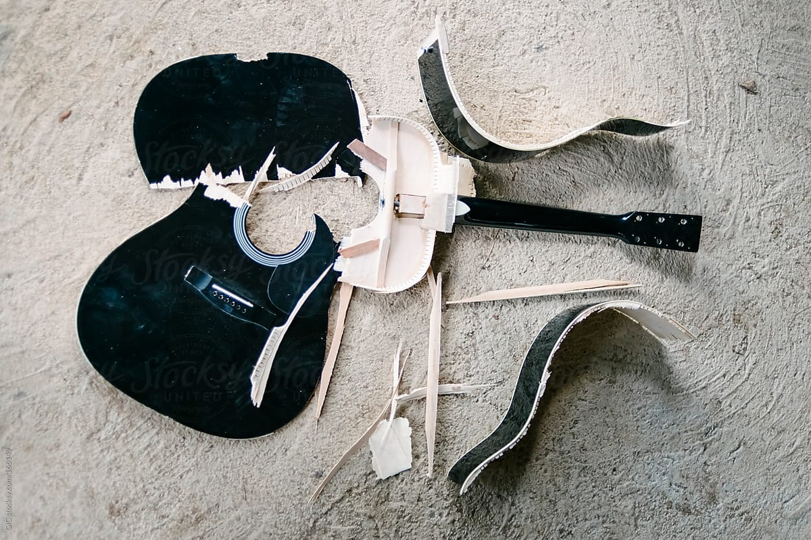

Today I found the coolest frog. This frog was just outside my house and obviously new how to party. Most days the frogs I find are not wearing clothes of any kind, but this one had the most expensive pair of frog shades I have ever seen. I give the frog an 8/10 for attitude, a 7/10 for athleticism, and a 10/10 for style, giving it an overall 25/30 on my famous frog rating scale.
 I have some bad news followers. I will no longer be able to write and perform my famous frog songs. I threw a fit when trying to find a rhyme for platypus and destroyed my instrument. If you have freinds that were waiting for my next release, please inform them that I am retiring from the musical part of my career and focusing on the frogs that have inspired me to make this website in the first place.